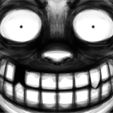

<header>
	<h1><a href="{%include url.html%}" class="index">404</a>/<a href="{%include url.html%}/bonus" class="index">bonus</a>/art</h1>
	<p>Miscellaneous drawings of dubious canonicity.<br/>
	Images open in new tabs.<!-- will use data to put it all on a separate page more easily eventually--></p>
</header>

<main>
	<h2>2018</h2>
	<div class="thumbnails">
		<a href="img/2018-12-25.png" target="_blank"></a><a href="img/2018-12-26.png" target="_blank"></a><a href="img/2018-12-28-lineup.png" target="_blank"></a><a href="img/2018-12-28-cards.png" target="_blank"></a><a href="img/2018-12-28-scene.png" target="_blank"></a>
	</div>
	
	<h2>2019</h2>
	<div class="thumbnails">
		<a href="img/2019-01-07.png" target="_blank"></a><a href="img/2019-01-16.png" target="_blank"></a><a href="img/2019-01-31.png" target="_blank"></a><a href="img/2019-07-18.png" target="_blank"></a><a href="img/2019-07-21.png" target="_blank"></a><a href="img/2019-08-16.png" target="_blank"></a><a href="img/2019-08-30.png" target="_blank"></a><a href="img/2019-10-09.png" target="_blank"></a>
	</div>
	
	<h2>2020</h2>
	<a href="img/2020.png" target="_blank"></a>
	
	<h2>2021+</h2>
	<p>[TBA]</p>
</main>

<hr style="margin-top:2em;"/>
<footer>&#169; 2018–2021</footer>